物理算准了，
传播歧义尚未得到见证
先确认两种材料响应的差别不是网格误差，再问未知墙体是否会留下影响目标成像的传播多解。本轮完成高精度前向修复与有限搜索，没有启动概率或递进成像。
三个直接结论
- 旧误差主要是空间离散问题。只提升Green积分阶数几乎无效；贴合材料界面并采用高阶场表示后，独立线源圆柱相对误差降至0.0266%。没有拟合自由复增益。
- 原始墙体的完整观测达到既定精度。两seed、两带、cal及固定目标共8项最细层级差为0.00653–0.03322，小于原0.1；PML、圆柱、伴随和互易另有检验。这是有限的离散资格，不是连续PDE认证。
- 尚未进入“数据近等价”的物理区域。3个context×4方法中最好cal距离为19.9123，门槛为1。没有任何合格歧义对，也不能从未找到推断唯一性。
先验证数值模型，而非只验证矩阵恒等式
升级VIE与独立高阶FEM使用相同连续材料、源、接收器及噪声单位。双单元平均VIE的负结果也保留。最终选用界面相容P3 FEM、解析入射和PML；保持全部二维多次散射。
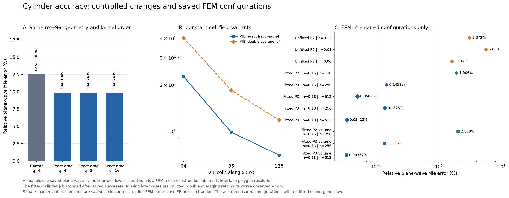
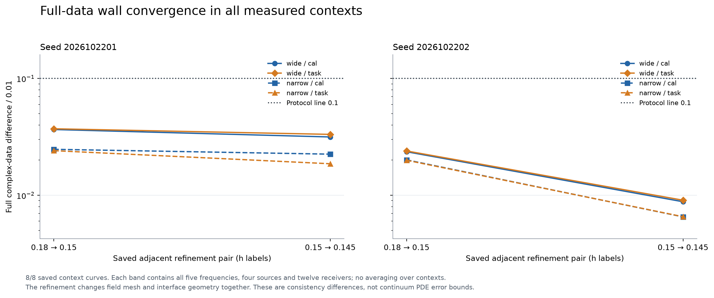
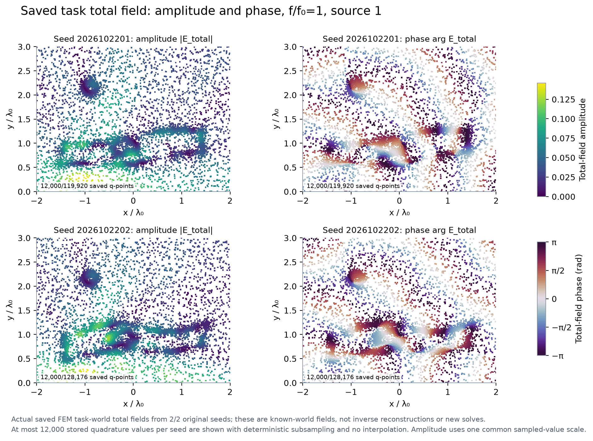
查看核积分、PML和参考复场
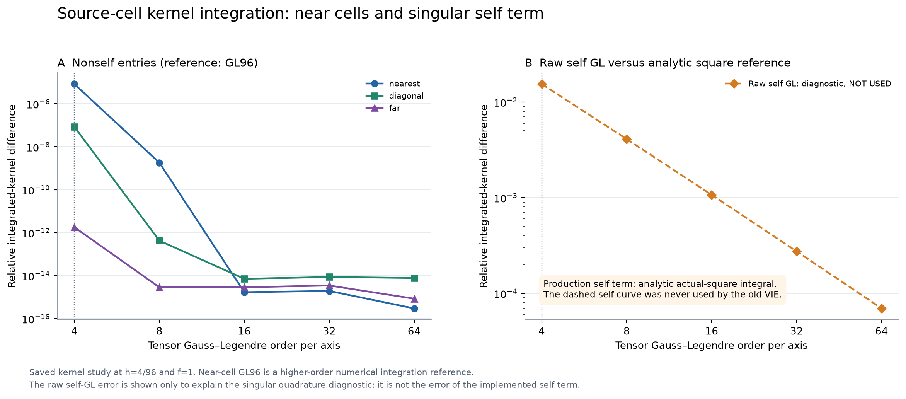
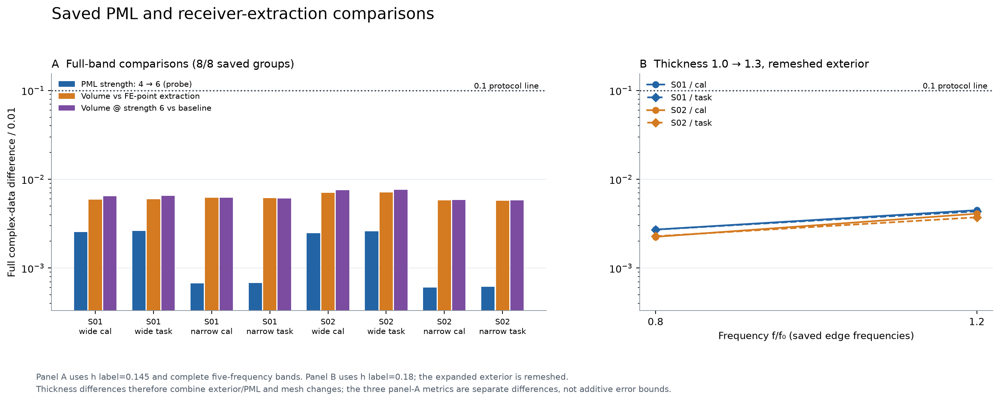
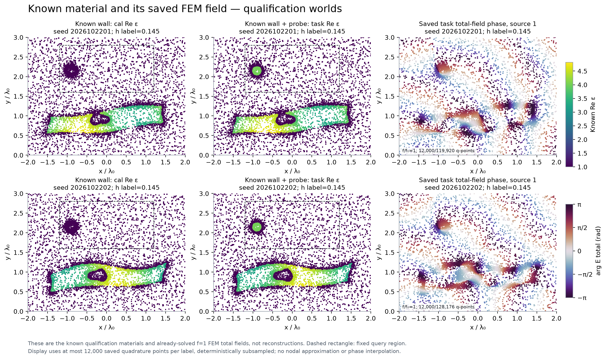
四方法公平搜索：所有候选都离相容门槛很远
Full-J、同材料尺度随机、双初始化FWI和Task-aware使用同一全域材料坐标、约束、先验与正确器权限。提案和接受不读取truth。这里是短预算局部搜索，并非充分收敛的多启动FWI。
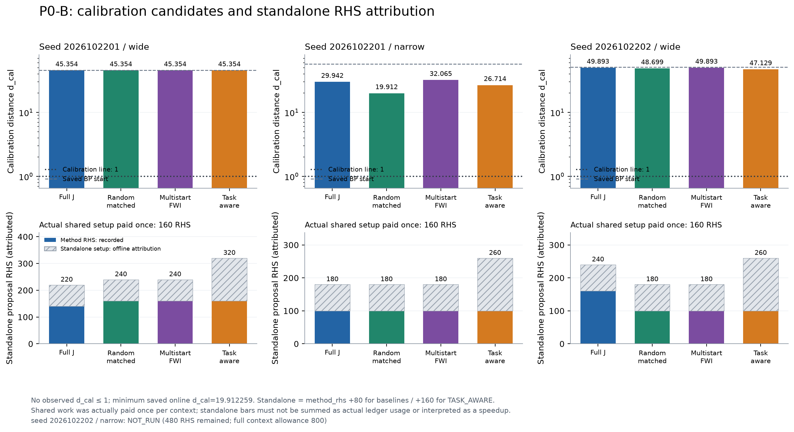
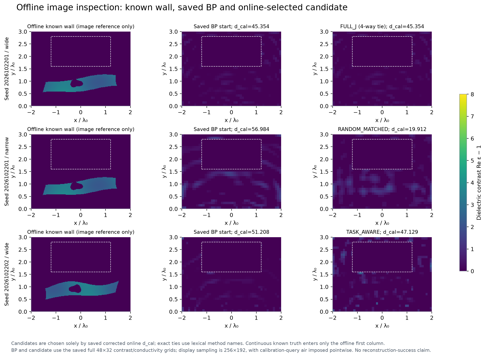
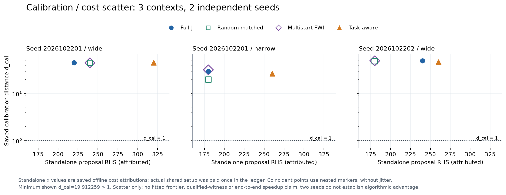
目标响应与joint必须分开
所有候选只计算了原24任务中的固定目标8。原未贴合圆形目标的网格细化差0.198–0.270，不合格并保留。三个在线选定端点补做圆周贴合后，256→512段差为0.000644–0.000923，求解残差通过；这个数值修复不能把远大于1的cal距离变成传播歧义。
相同目标的质心差为0。未知目标joint补偿、全部24任务、最终见证扰动、posterior、A17新ROM、NN及三维均未运行。
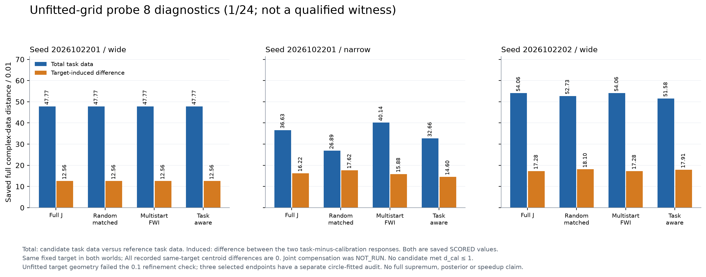
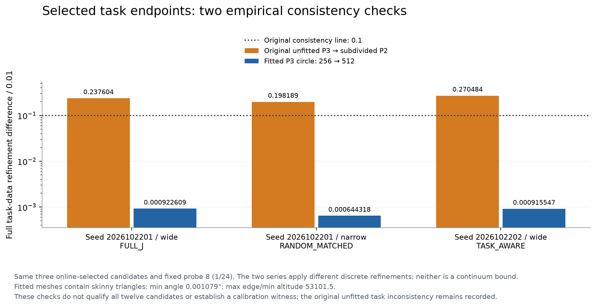
费用与失败
| 新阶段 | 预约复RHS | 预约分解 | 计费CPU秒 | 作业wall秒 |
|---|---|---|---|---|
| P0-Q | 876 | 211 | 395.77 | 354.19 |
| P0-B | 3224 | 443 | 714.73 | 967.51 |
这是报告快照；发布尾项收据单列。包含失败和重跑，预约与完成数在机器账本分别列出。Q计费含60秒未仪表化准备分配，不能称为精确实测CPU。旧P0费用不混入。PML审核峰值2.160GB超过原1.5GB工程目标，未发生系统OOM；修正版搜索峰值约1.059GB。
下一轮的科学问题
应先让普通受约束FWI在原观测和声明先验下达到相容尺度，区分优化失败、表示限制和真实传播多解。只有稳健的joint见证才支持低维概率传播试验；“递进”还需在直接多假设方法之上取得独立收益。本轮没有证据授予这些算法GO。